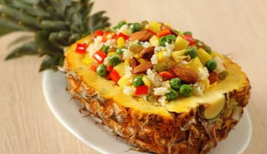
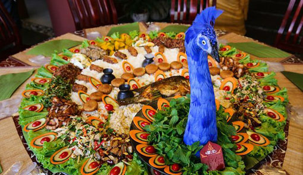
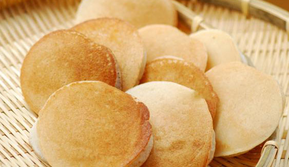

菠萝饭，又叫凤梨饭，是以菠萝、米饭等食材制成的一道美食。也是云南特色。外貌色彩丰富，味道可口。主料：香米饭（蒸熟）250克，鲜菠萝1个，鸡蛋1个，熟腰果仁少许，青红菜椒各1/2个，洋葱半个，鲜虾仁100克，葡萄干少许。调味料：蚝油，油、盐、鸡精。

孔雀宴是由西双版纳饮食特色及体现傣族特色的小菜组成，以及各类鲜美烤肉。 凉热荤素煎炒烹炸合理搭配，色香味形面面俱到。孔雀宴手抓饭是以竹子为桌，芭蕉为盘，一身金翠羽裳的”孔雀”跃然席上。菠萝肉与紫米饭紧密结合的柔软饭团，象征一双栩栩如生的孔雀眼，鸡肉、烤鱼、烤肉、香菇、菜心、黄瓜等。

粑粑是用糯米、高粱、荞麦、小米、糯玉米等多种带黏性的杂粮经加工、浸泡、蒸熟后，用木锤捣散米粒，再用手工做成圆饼而成。粑粑有着不同寻常的意义。春天是农忙时节，粑粑便被派上了很好的用处，火烤或者油炸既简便实在又好吃.拜年时，粑粑也有了用处，尤其是土家人为儿子定亲拜年时，一对大如明月象征团圆的粑粑是必不可少的。